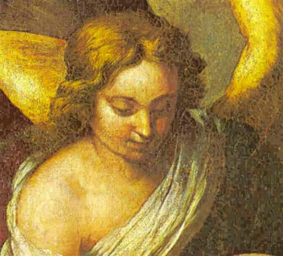

"O SERMÃO
DO ANJO"


Por ordem do CRIADOR o ANJO ditou para Santa Brígida em 1351, um lindo, comovente e amoroso Sermão, exaltando e enaltecendo as admiráveis Virtudes e as notáveis Prerrogativas da VIRGEM MARIA, MÃE DE DEUS;

=ÍNDICE=
 -
DEUS AMAVA A VIRGEM ANTES DE TODA A CRIAÇÃO
-
DEUS AMAVA A VIRGEM ANTES DE TODA A CRIAÇÃO
 -
SENTIMENTO DA VIRGEM NA CONCEPÇÃO, NASCIMENTO, MORTE E
-
SENTIMENTO DA VIRGEM NA CONCEPÇÃO, NASCIMENTO, MORTE E
GLORIOSA RESSURREIÇÃO DE SEU FILHO
 - INFORMAÇÕES
+ EMAIL + FIRMAS DE BUSCAS
- INFORMAÇÕES
+ EMAIL + FIRMAS DE BUSCAS